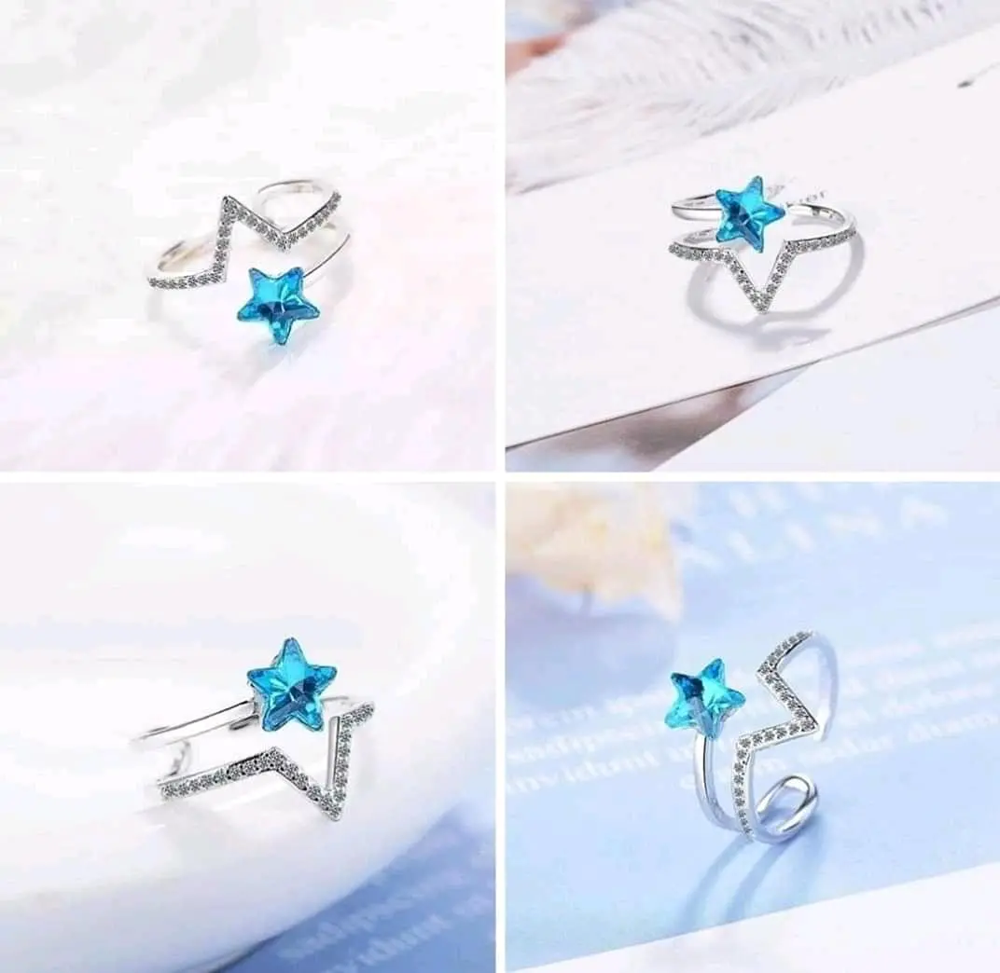
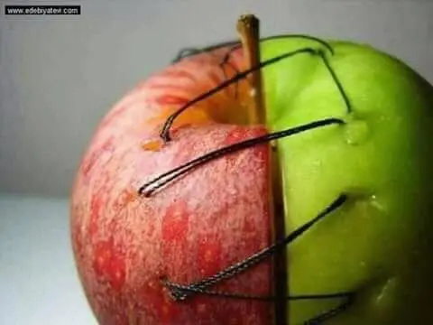

Latest news

How to work with the chess layout for Gutenberg?
Here you will learn how to easy and quickly use blocks as a tool for creating attractive content.
continue readingTop-5 ways to minimalism with the grid layouts.
It is not always the big amount of details make your photo interesting. Sometimes small things are better.
continue reading
Easy tips on how to add pictures in the gallery.
The developer company created new techniques which help to design simply dynamic content and images.
continue reading 
New ZeGuten plugin with widgets for content.
The company announced about the new ZeGuten plugin which will be available for selling later this year.
continue readingMain steps to perfect content with Gutenberg.
Create unique blocks easily with just a few clicks. All about new technologies, rules and not only.
continue readingYour site can work quickly without errors.
The fast work of the site is ensured by the correct arrangement of all content blocks and layouts.
continue reading